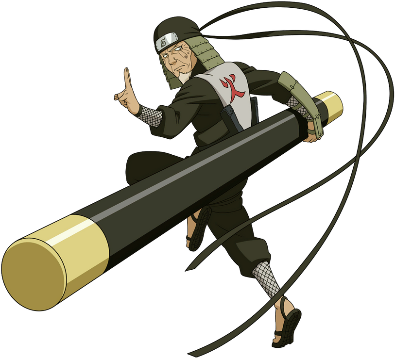
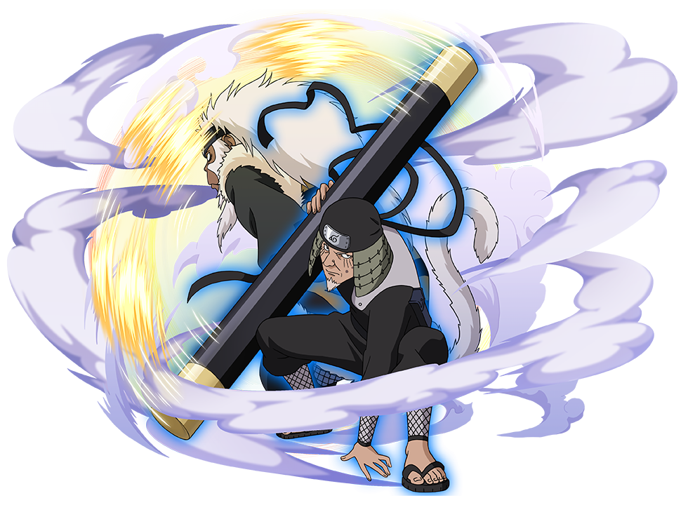

Hiruzen Sarutobi

1. The Forbidden Jutsu (Kinjutsu) - The Five Elements Seal
Description:
This technique seals the chakra of a target by using the Five Element Seal. Hiruzen had knowledge of many forbidden jutsus and was willing to use them to protect Konoha.
Impact:
Hiruzen’s knowledge of such dangerous and forbidden techniques showed his willingness to sacrifice his own well-being for the safety of his village.
2. Summoning Jutsu (Kuchiyose no Jutsu)

Description:
Hiruzen was skilled in summoning various creatures, including the Monkey King Enma. Enma was a powerful and loyal ally, and Hiruzen could summon him to fight on his behalf, often using Enma's transformation into a staff..
Impact:
The Monkey King Enma was particularly useful in battle, as he could transform into a powerful staff that could extend, shrink, and fight on its own. This summon greatly enhanced Hiruzen's combat capabilities.
3. Reaper Death Seal (Shiki Fujin)
Description:
A powerful and forbidden sealing technique, Shiki Fujin allows the user to summon the Shinigami (Death God) to seal away an enemy's soul, usually at the cost of the user's life. Hiruzen used this technique to seal the Nine-Tails' chakra into himself during the attack on Konoha.
Impact:
While it’s a high-risk jutsu that costs the user's life, Hiruzen used it to neutralize one of the most dangerous threats to Konoha, showing his selflessness and dedication to the village’s protection.